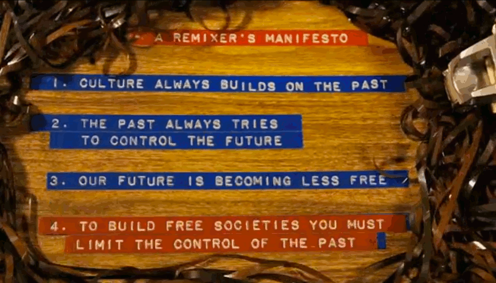
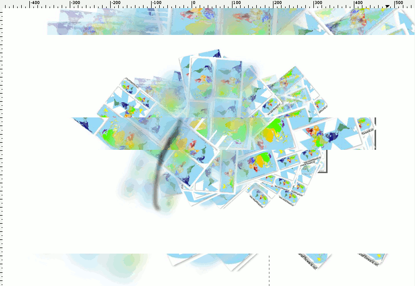

"Remix culture can be defined as a global activity consisting of the creative and efficient exchange of information made possible by digital technologies." - Eduardo Navas
"involves the combination of two or more works that may be very different from one another" and involves "the reuse, or remixing, of works of art, of content, and/or of data for purposes that usually were not intended or even imagined by the original creators."1
-Brian Lamb
Brian argues, in his article Dr. Mashup; or, Why Educators Should Learn to Stop Worrying and Love the Remix, that mashup and remix can be applied to "the mixing of any number of digital media sources, and to data mashups, which combine the data and functionalities of two or more Web applications."
Eduardo Navas argues that Web 2.0 has launched the Web Application mashup in his article Regressive and Reflexive Mashups in Sampling Culture, and exhibits a "selective sampling" that leaves most of the code intact. Instead, the mashup combines pre-existing applications with a "binding technology". A good example of this 2.0 mashup, still embroiled in controversy and legal disputes, is PadMapper which places Craigslist apartments for rent on an interactive web map.
When I was in high school the term mashup was synonymous with Girl Talk, who really was the Talk of the town. For those who don't know Girl Talk, Wikipedia describes him as an "American musician specializing in mashups and digital sampling."2
He was also the one of the primary subjects of the documentary RiP!: A Remix Manifesto, as his music aptly intersects copyright law and changing musical production/consumption paradigms.

Navas asserts that the purpose of the mashup changes considerably between the two. Web Application mashups tend to be for practical purposes, whereas music mashups are developed for entertainment purposes. Although Navas does not address convergence nor cross over between the two. The site hypem.com aggregates mp3's from music blogs and provides an interface to discover and share music cross-blog. The mashup operates at the application level and is practical but also functions for entertainment purposes.
Navas also argues that music plays an important role in maintaing mental health, because
"When they hear their favorite songs mashed up, it is very likely that they will really get excited and find pleasure in recognizing the compositions; their elation will help them cope with whatever stress they may have had throughout the day"
The core difference between the two, according to Navas, is that the musical mashup derives its cultural authority via its original sources, as recognition of the listener of the disparate parts and as an entertaining surprise, whereas the web application mashup is less concerned with original sources and more concerned with how well those sources are sampled for efficiency and usefulness (that perhaps was absent prior), subverting their original use.
"a web application mashup does not point back allegorically to pre-existing sources for validation…it merely uses them to develop a more efficient tool. Reflexive mashups are designed for efficiency and optimal use, not celebration or enjoyment of spectacular material."
In many ways I find Navas reasoning too limiting. For one, music mashups can include elements that were not "spectacular" on their own, but samples that culminate and validate the creation in their union.
Although it is true that web application mashups, often those using mapping platforms, emphasize the new value that the mashup produces over validation of the original source, i.e. , such as the geolocation of craigslist apartment ads over the ads themselves, they, by default, express the importance of the data. Because the mashup is created for practical purposes, the inclusion of these sources encodes them as valid.
Web application mashups can be supplemental to the original data, and do not necessarily degrade the original sources in the process of creating something new. In fact, some applications, like data hubs (e.g. ScraperWiki, GeoIQ, Socrata), explicitly showcase the source in order to attest to its legitimacy. A site made by Development Seed, a creative data vis and mapping team based in DC, aggregates data located in the Sahel region, sahelresponse.org/ from 5 different data sources: FEWS NET, UNOCHA, WFP, ITHACA, and UNHCR. Each is source is important, and plainly showcased on the landing page, but when taken together hope to provide new insights.

"…Sampling is practiced in new media culture when any software users including creative industry professionals as well as average consumers apply cut/copy & paste in diverse software applications."3 -Navas
"Mashups actually have roots in sampling principles that became apparent and popular in music around the seventies with the growing popularity of music remixes in disco and hip hop culture, and even though mashups are founded on principles initially explored in music they are not straight forward remixes if we think of remixes as allegories."-Navas
It is this sampling that puts Girl Talk on shaky fair-use ground. A single song, if he were to pay for every sample used, could cost him hundreds of thousands of dollars.
A great fan video can be found here. Footage comes from RiP! which was compiled on a site called OpenSourceCinema and was freely downloadable to remix as part of the film's production.
That is not to say he invented the mashup. He was not the first person to make a mashup nor would he claim to be. Other popular mashup artists include L.A.'s own Super Mash Bros. Check out one of my favorite songs by them below:
"In science and in my music, it is really trial and error for me. We just dabble in so many things, with samples I just sample things all day long, then I see what works and doing science, I just read journals and take notes, that's just collecting the data, to look into a million different things to make something new."
"A lot of the time, very broad ideas are patented…I think that if it were a bit more open, to the point where the whole point of medicine and science was, let's just of the best we can, let's just build on all the ideas and see what we can make happen I think the progress of medicine would move incredibly fast."
-Girl Talk (RiP!: A Remix Manifesto)
while(open && freedomOfSpeech == true){
restrictions--;
copyright--;
progress++;
}
return progress;
Girl Talk makes an important point. Open [data,content,music,art…] isn't just important for his music career, but also for scientific progress as a whole. When patents are too broad, similar to when code is abstracted and hidden, improvements upon the original idea or implementation cannot be made as easily. What is the purpose of this work if not to advance domain for current and coming generations more so than the career of any one scientist?
Some argue that without the economic incentives that follow intellectual property laws, there will be fewer prospective artists, writers, filmmakers, scientists, etc.

If their principle motivation is, and always has been, economic rather than humanistic, why are we heralding these creators to be cultural messiahs as opposed to hackneyed pariahs? ©
I have copyrighted the above sentence because I am ABSOLUTELY SURE no one has ever said that before and personally, I think it is pretty catchy.
Now if you want to make that same point, you'll have to pay me $$$. Don't give me that look. The rhyme was pretty good...
Isaac Newton, in a letter to Robert Hooke in 1676, wrote:
"What Descartes did was a good step. You have added much several ways, and especially in taking the colours of thin plates into philosophical consideration. If I have seen a little further it is by standing on the shoulders of Giants."
The idiom "standing on the shoulders of giants" has often been used in support of Free and Open Software Movements.
Bob Young of Red Hat echoes the same ideology in his book Free as in Freedom: Richard Stallman's Crusade for Free Software,
“In business, this translates to not having to reinvent wheels as we go along. The beauty of [the GPL] model is you put your code into the public domain…Suddenly you have the ability to reuse the best of what went before. And suddenly your focus as an application vendor is less on software management and more on writing the applications specific to your customer's needs."
If Young speaks the truth, open (everything) means:
Better business?
Sounds like something those lobby groups would support. Right?
Why do they protect of old ideas at the cost of new?
Maybe in the short run it is more profitable to cling to the past, and the short run seems to be a prevailing interest for many corporations.
Sustainability and profit, historically, have not been married to each other. Perhaps these lobby groups[see section on remixes below] see their imminent destruction in a changing digital landscape and their draconian copyright infringement-witch hunt is a last ditch effort to salvage a decaying industrial model, a dying wish if you will…
But I digress.
"…is the reworking or adaptation of an existing work...It may add elements from other works, but generally efforts are focused on creating an alternate version of the original".
-Brian Lamb
In 2008, Brett Gaylor, among others, developed a Remix Manifesto that I have taken from the film RiP!: A Remix Manifesto and made into a gif.

The film follows the people and issues behind copyright, copyleft, and content creation in the 21st century. The film reveals that two lobby groups, Recording Industry of America(RIAA) and Motion Picture Association of America (MPAA), represent 6 corporations that own 90 percent of media. Concerned with preserving a title, a brand, or an image, rather than the progression of any artistic or scientific fields, they seek to uphold the intellectual property status quo despite a rapidly changing public opinion.
Assuming everything changes over time, preservation of one image or public face directly conflicts with the very nature of the universe. This tension to keep the old, noted as number 2 on the Remixer's Manifesto: "The past always tries to control the future", is nothing new, however, every year more severe laws restricting freedom of expression are being put in place and progress can only surmount so many of these constraints.
History, having been built and layered upon itself, is now destroying its own foundations at the cost of future generations.
Walt Disney benefited from his predecessors and from the film Steamboat Bill Jr, now freely, and ironically, available via Public Domain. However, nowadays, Disney "the corporation" seeks to truncate this tradition of creative "stealing" that has benefitted them so handsomely. They want to be the final stop on this creative commons train ride and they are pulling all the (legal) breaks to get it. Ok, I'll stop with the train metaphors because I am at a crossroads, but you get the point.
While watching, I couldn't help but ask myself:
The same question circles hacker criminality discourse, and the effectiveness of cyber-security. In addition, those affected seem to be disproportionately economically and socially disadvantaged. Copyright infringement laws have put kids behind bars for mix tapes of Metallica and Journey, and the option of fighting back (not settling) is risky. The legal fees alone make it near impossible for the average American family to afford. Without ever even going to trial, fear-tactics of lobby groups cost the accused thousands of dollars.
The way we consume and share information has drastically changed in the last 30 years so it isn't surprising that policy is far behind. With this in mind, the reluctancy of the government to reform old copyright laws in the Digital Era and the precedence given to these lobby groups over new artists, despite no objective economic verification of their claims, does not excuse their actions.
The freedoms of many should not be sacrificed for the sluggish and unjustified criminality of a process that catalyzed the industry itself.
As a testament to the prolificacy of the remix, TV shows have begun integrating remixes within the shows themselves, what I call the "meta-remix". One of my favorite television shows, Adventure Time, often the subject of remixes via youtube, payed homage to the remix. Jake the dog remixed a message from his father to help motivate his best friend to defeat some terrible creature.
I made this piece for my term paper this fall on the topic of cyberspace and identity. The blurred image is taken from the film The Land of Wandering Souls or La terre des âmes errantes, a 2000 French-Cambodian documentary film directed by Rithy Panh. The film follows a Cambodian family as they dig trenches for the country's first fiber-optic cable.

It didn't take long for this remix to catch significant media attention, featured on college humor, Huffington Post and countless culture/music blogs.

So far on the twittersphere, I haven't read that listeners are offended by the remix or think it is illegal.
The original post by remix-mashup artist Marcus Coronel can be found here.

The gif above comes from a project by Slava Balasanov that allows anyone to position animated GIFs and arrange them in 3D space.4

I took the images from the film RiP!: A Remix Manifesto and so have benefitted from the work of those before me. The copyLeft serves me well in this instance because I will not be penalized for reusing the images.

Having spent time and creative energies into conceptualizing and creating the mashup image, I can also see, however hypocritically, the value in receiving credit for the idea. Hence the existence of copyRight…
This was my first film endeavor into remix-culture, which contains footage from archive.org taken from a promotional film for advertisers of Redbook magazine under Public Domain Mark 1.0 CC License. The video also contains a Cyndi Lauper song that is not mine to show, so but I formally take no credit for it…OKAY RIAA?
ocean floor -- reuse -- reduce --recycle from Maya on Vimeo.
If the the creative work of others results in a product that is a tool, like construction of a new language, reuse is preferred. These tools, if available, can be used as the building blocks of another creation, such as a novel.
The video below features excerpts from the 1915 Alice in Wonderland, under Creative Commons license: CC0 1.0 Universal5. The song is one of my own, so no legal issues there OKAY RIAA?
intermission from Maya on Vimeo.

Does reuse always degrade the original or can it sustain its relevance as well?
The electronic mashup artist GirlTalk integrates and recreates old soul, R&B, and motown classics. Although, the copyright might claim he is stealing intellectual property, and devaluing the original work in the process.

A reflextive remix, according to Eduardo Navas, "allegorizes and extends the aesthetic of sampling, where the remixed version challenges the aura of the original and claims autonomy even when it carries the name of the original; material is added or deleted, but the original tracks are largely left intact to be recognizable".6 The diagram below comes from his site remixtheory.net, click on the image to find the site.

Greg Gillis told Pitchfork media in 2010 that he wasn't concerned with getting sued, in part, because "so much media content now is based upon previously existing media" and because his mashup aesthetic "probably isn't radical to kids in high school now."7
Will the copyRight slow their persecution of mashup artists like GirlTalk after sufficient exposure to this form of creation?
Are the copyRight simply the current embodiment of resistance against change, an modern example of the past attempting to control the future?
Will a critical mass/public overwhelming shift on derivative works/plagiarism force institutions to rethink the intellectual property paradigm?
or will I get sued for the images I do not own that I knowingly manipulate and proliferate on a daily basis, along with many other remixers?
Virtual space is gaining ground, pardon the pun, supplanting physical territory.
"The 20th century had been the century of property, of land, the 21st century was to be the century of intellectual property, of ideas"
-Brett Gaylor


As I have learned in Gabriella Coleman's course, Hacker Culture and Politics, these are not mutually exclusive titles.

However, I was not destroying the work in its entirety, nor without greater aim.
By Navas definition, I'd say it was a reflexive remix.


Criticism of "creative regurgitation" also assumes that it is possible to exhibit any media/content in an identical way. The passage of time impacts even the most famous pieces of art. Does the Mona Lisa look the same now as it did when it were first made?
Will they look and produce the same feelings and inspirations in different contexts/environments?
.jpg)
"This is the essence of the popular arts in America: Be a magpie, take from everywhere, but assemble the scraps and shiny things you’ve lifted in ways that not only seem inventive, but really do make new meanings. Fabrication is elemental to this process — not fakery, exactly, but the careful construction of a series of masks through which the artist can not only speak for himself, but channel and transform the vast and complicated past that bears him or her forward."8 - Ann Powers

Memes can provide snapshots of infant ideas to transform the "complex past" Ann Powers mentions.
I intended for the gif to reflect the ease of which I can digitally manipulate any image, despite the abstract and complex nature of the content.
The meme can show a cat, the president of the united states, or the often controversial conceptualization of our planet on a two dimensional plane.

iisn't half as old as you thought it was


There is much more to say. In fact, I'd say I have barely sampled remix culture.

http://www.educause.edu/ero/article/dr-mashup-or-why-educators-should-learn-stop-worrying-and-love-remix↩
http://rhizome.org/editorial/2012/dec/4/prosthetic-knowledge-picks-3d-gif/↩
http://pitchfork.com/news/40515-girl-talk-dishes-on-new-lp/↩
http://www.npr.org/blogs/therecord/2012/08/01/157736941/on-bob-dylan-and-jonah-lehrer-two-fabulists↩